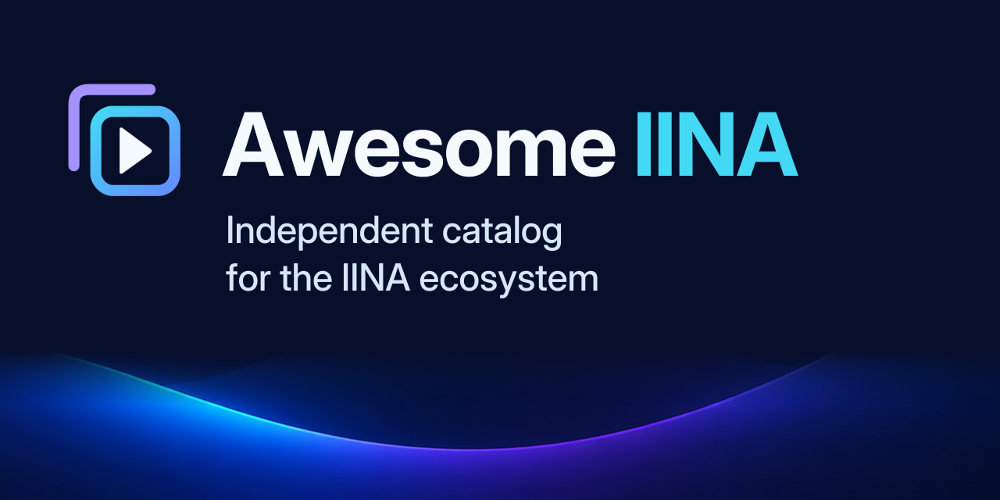
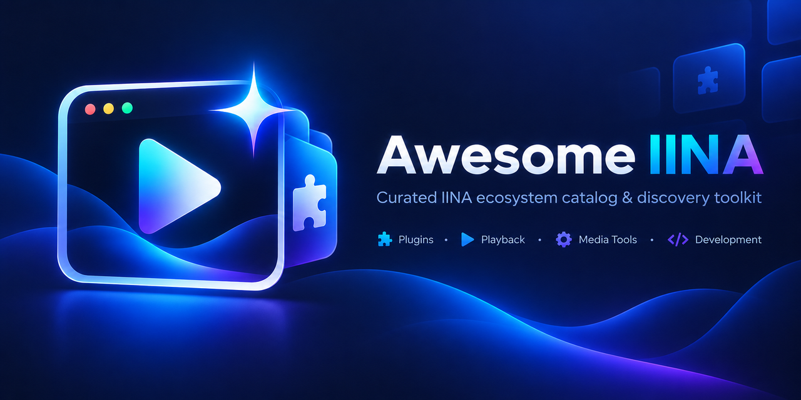

A clearer mark.
The same luminous world.
Revision 2 separates the compact identity from the supporting artwork. The original wave language remains; the primary symbol, editable social typography and optical-size icons now have defined roles.
Kit 2.1.1 · manifest and editable-type maintenance patch · same visual identity 2.0.0-review.1 · 16 September 2026
Local file and rendering checks are recorded. Human recognition review and public deployment are still pending.

{kind=link}
{kind=link}
Small by design, not by accident.
Actual CSS sizes at your browser's current density. These are image-element tests, not proof of browser-tab selection. Dedicated 16- and 24-unit drawings use larger interior shapes and adjusted border widths.
Revised · dark surround
Revised · light surround
Original control at matching sizes
Compare at 320 × 160.
A proposed reading stress test, not a universal platform crop. Both compositions preserve their original aspect ratio. The revised card's two role lines use 48 px type in the 1280 px master, equivalent to 12 CSS px at this width.

Real paths. Real transparency.
{kind=link}
{kind=link}
{kind=link}
{kind=link}
Symbol SVGs contain only editable vector geometry, no embedded raster or font. Production wordmarks use outlined glyphs; editable wordmark counterparts are included separately. Font binaries are not distributed.
One primary identity per placement.
The revised social card uses the same mark as the favicon, without the old player illustration competing as a second logo. Its bottom wave texture comes from the preserved hero. The original hero remains an optional historical reference in the full kit. It is excluded from the default installer and production-only ZIP; the integration demo uses only the current wordmark and live text.
{kind=link}
Handoff and remaining checks
| Delivered | Review boundary |
|---|---|
| Optical PNGs, exact-frame ICO and SVG fallback | Real browser-tab selection, Safari/iOS behavior and user matching remain to be checked. |
| Readable short role copy and editable typography | First-impression recognition is not established by a screenshot. |
| Complete OG metadata and intended base paths | Local route checks do not demonstrate a published website or GitHub unfurl. |
| Preserved source artwork and checksums | No trademark clearance, ownership certification or C2PA trust-chain validation is claimed. |